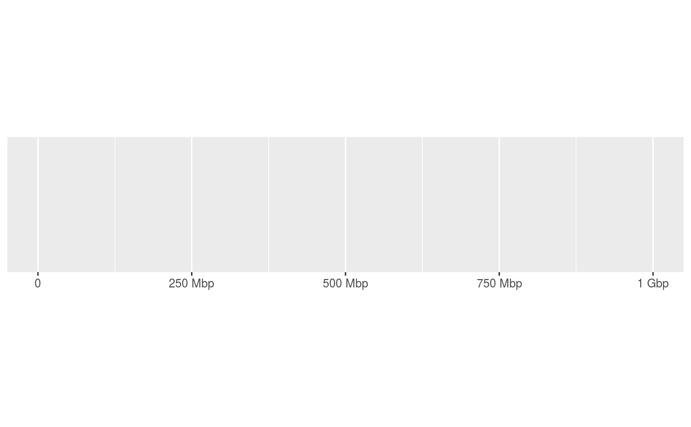

basepair_label() automatically scales and labels numbers
with an appropriate SI suffix, e.g. "kb" for values \(\ge\) 1e3, "Mb" for
\(\ge\) 1e6, "Gb" for \(\ge\) 1e9.
label_basepair( accuracy = NULL, unit = "b", sep = NULL, labelsmall = FALSE, ... ) basepair_label(x)
Arguments
| accuracy | A number to round to. Use (e.g.) Applied to rescaled data. |
|---|---|
| unit | Optional units specifier. |
| sep | Separator between number and SI unit. Defaults to |
| labelsmall | A |
| ... | Other arguments passed on to |
| x | A vector to label. Can either be |
Value
A function for label_basepair() or a character vector
of labels for basepair_label().
Details
The label_basepair() function is a function factory that
returns a labelling function, i.e. a function that takes a vector x
and returns a character vector of length(x) giving a label for each input
value. The basepair_label() function is the default labeller from
label_basepair() for convenience.
Note that these functions don't attempt to format numbers smaller than 1, as the units millibasepair and centibasepairs do not make sense.
When used in combination with
scale_(x|y)_genomic, these labelling
functions work best as the minor_labels argument.
Examples
require(scales)#>#> scale_x_continuous(label = label_basepair())#> scale_x_continuous(label = basepair_label)# When the label 'bp' is preffered over 'b' demo_continuous(c(1, 1e9), label = label_basepair(unit = "bp"))#> scale_x_continuous(label = label_basepair(unit = "bp"))